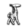
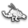

The map is composed of forest, jungle, desert, and snowy mountain regions. Mountainous terrain is traversed with the employment of parkour, and aided by the use of zip-lines. Corrupted Zones constitute areas that heighten difficulty and are populated by corrupted machines that behave with more aggression. To uncover more of the map, Aloy must scale large giraffe-like machines known as Tallnecks. The quest structure unfolds to accommodate the exploration of tribes, while the main story covers the entire world. Side quests involve Aloy completing tasks, like gathering materials, coming to the aid of individuals in danger of being killed, solving mysteries, assuming control of bandit camps, eliminating criminals and more difficult machines, accomplishing various challenges at any of the five Hunting Grounds, and obtaining an ancient armour that makes Aloy almost impervious to damage. Collectibles include vantages that offer visual information of the Old World, metal flowers that contain poetry, and old relics, such as ancient mugs and tribal artifacts.
There are 26 total machines in Horizon Zero Dawn.
Here are a few examples:
Watcher - The smallest known machines, Watchers are designed for reconnaissance.
Tallneck - They are the only machine not hostile to humans. If Aloy climbs to its disc and overrides it, then she will get a map of the area.
Thunderjaw - The largest machine in the game. Its size, power, and array of heavily damaging weapons make it one of the most feared of all machines.
Stormbird - The biggest flying machine. Its huge size, intimidating appearance, superior field of vision (due to being aerial), and an array of powerful attacks make it a lethal threat to any human who enters an area over which a Stormbird patrols.